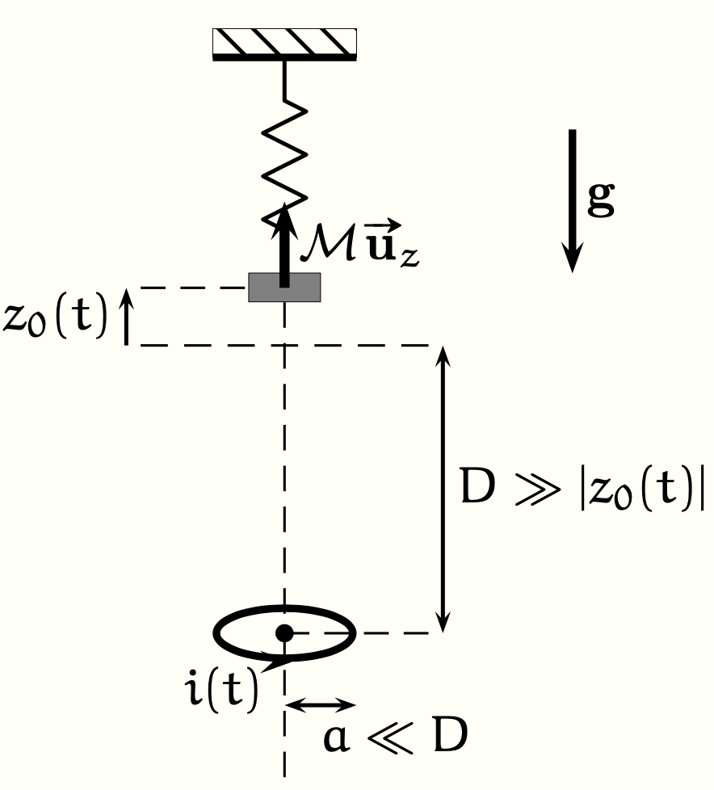

PrepOral
[MP] [Maison]
Résistance d’un conducteur annulaire
Enoncé
On considère un anneau constitué d’un conducteur ohmique de conductivité $\gamma$ soumis à une d.d.p. $U$. On néglige les effets de bords et on suppose que les lignes de courant en régime stationnaire sont orthoradiales (en géométrie cylindrique).
\begin{figure}[h]
\centering
\includegraphics[width=0.3\linewidth]{Capture d’écran 2025-02-10 à 10.07.22.png}
\end{figure}
\textbf{Q)} Établir l’expression de la résistance électrique du conducteur entre les faces A et B.
On considère un aimant de dipôle magnétique $\mathcal{M} \vec{u_z}$ et de masse $m$ suspendu via un ressort de raideur $k$ au plafond.
Dans l’axe de ce dipôle, on place à une distance $D$, lorsque l’aimant est à l’équilibre, une spire de rayon $a$ et de centre $O$,
dont on négligera l’auto-inductance, et de résistance $R$. On met en mouvement l’aimant en l’écartant de sa position d’équilibre et
on note $z_0(t)$ sa position repérée par rapport à la situation d’équilibre. Les conditions initiales sont
: $z_0(0) = b > 0$ et $\dot{z_0}(0) = 0$.
On supposera, dans le but de simplifier les calculs au maximum que $|z_0(t)| \sim b \ll D$ et que $a \ll D$.
On donne l'expression du champ magnétique dipolaire :
$$\vec{B}=\frac{\mu_0 \mathcal{M}}{4\pi r^3}(2\cos{\theta}\vec{u_r}+\sin{\theta}\vec{u_{\theta}})$$

Q. Étudier le mouvement de l’aimant.
[Etapes lors de la discussion :
1. A l’aide de la loi de Lenz, justifier que la présence
de la spire introduit un amortissement du mouvement de
l’aimant.
2. Établir l’expression du courant $i(t)$ traversant
la spire à l’ordre le plus bas en $z_0/D$. En déduire l’expression du moment
magnétique $\mathcal{M}'(t)$ de la spire.
3. Écrire l’équation du mouvement de l'aimant. En déduire le temps
caractéristique d’amortissement des oscillations de l’aimant. On pourra rappeller
la résultante des forces de Laplace sur un aimant : $\vec{F}=\vec{grad}(\vec{\mathcal{M}} \cdot \vec{B})_z$
]
Commentaires
Encore jamais posé !
Corrigé
Interprétation qualitative :Plaçons nous dans le cas où $\dot z_0>0$, c’est à dire que l’aimant s’éloigne de la spire. Le flux magnétique à travers celle-ci diminue. Le courant induit sera donc positif de manière à créer un champ propre de flux positif pour s’opposer à la baisse de flux extérieur (loi de Lenz). L’aimant, dont le moment magnétique est alors aligné avec le champ créé par la spire, sera donc attiré par les zones de champ fort, c’est à dire vers la spire : l’effet sera donc de freiner l’aimant. On peut raisonner énergétiquement, les courants induits vont dissiper de l’énergie par effet Joule. Comme il n’y a pas de source dans la spire, l’énergie ne peut être prélevée que sur l’énergie mécanique de l’aimant.
1) Calcul du champ magnétique au niveau de la spire. On suppose que le champ magnétique est uniforme sur la spire ($a \ll D$), on prend alors $\theta=\pi$ et $r=D+z_0(t)$ : $$\vec{B}_{spire} = \frac{\mu_0 \mathcal{M}}{2\pi(D+z_0(t))^3} \vec{u_z} \simeq \frac{\mu_0 \mathcal{M}}{2\pi D^3}(1-\frac{3z_0(t)}{D})\vec{u_z}$$ 2) On en déduit le courant induit $i(t)$ (on néglige l'autoinductance) : $$ i(t)=\frac{1}{R} e(t) = -\frac{1}{R} \frac{d\Phi}{dt}= \frac{3}{2} \frac{\mu_0 \mathcal{M} a^2}{R D^4} \dot z_0(t) $$ 3) Calcul du champ crée par la spire selon l'axe (Oz). On reprend l'expression du champ magnétique créé par un moment magnétique avec $\vec{\mathcal{M}'}=i(t)(\pi a^2)\vec{u_z}$. On trouve avec cette fois $\theta=0$ et $r=z$ ($z$ quelconque pour pouvoir prendre le gradient ensuite) : $$\vec{B}_i(z,t) = \frac{\mu_0 \mathcal{M}'}{2\pi z^3} \vec{u_z} = \frac{3}{4} \left(\frac{\mu_0^2 \mathcal{M} a^4}{R D^4} \dot z_0(t)\right) \frac{\vec{u_z}}{z^3} $$ 4) Calcul de la force magnétique. On a : $\vec{F}_m = \vec{grad} (\vec{\mathcal{M}} \cdot \vec{B}_i) (z=D+z_0(t))$, on écrit le résultat à l'ordre 1 en $z_0(t)/D$ et $\dot z_0(t)/D$ : $$ \vec{F}_m \simeq - \frac{9}{4} \left(\frac{\mu_0^2 \mathcal{M}^2 a^4}{R D^8}\right) \dot z_0(t) \vec{u_z} = -\alpha \dot z_0(t) \vec{u_z} $$